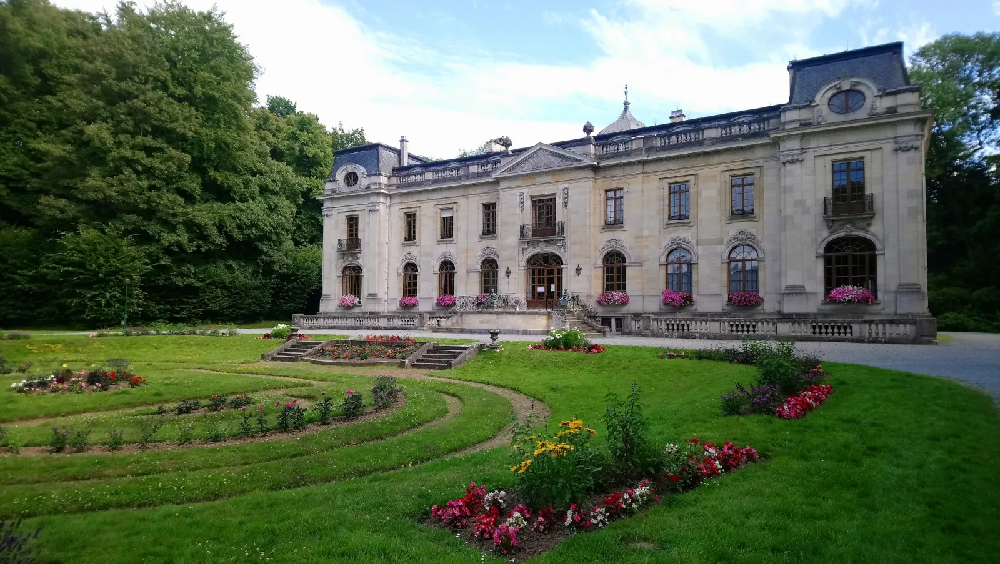
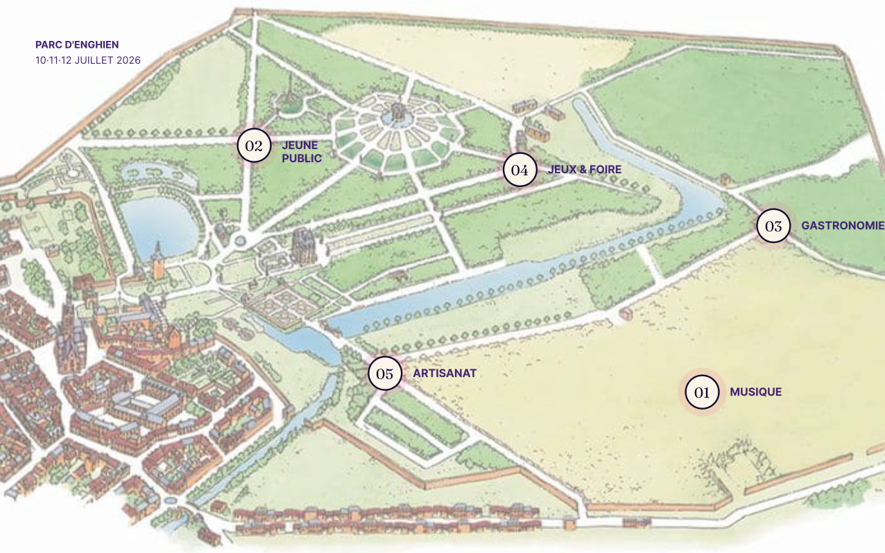

Soixante noms,
trois nuits.
-
Vendredi
10 juillet 8 concertsMahomi Rouge
Lupin Fauve—Caravansérail
Citronnier—Atelier 88
Petite Lune—Boniface le Bonimenteur—Trio Trampoline
-
Samedi
11 juillet 8 concertsLagune Studio
Pamplemousse—Saint Roma—Marée Haute
Les Quatres Saisons—Bambou Club
Verre d'Or—Chaussettes en Goguette
-
Dimanche
12 juillet 8 concertsFleur de Sel
Cèdre du Liban—Nina & Les Ouragans—Volcan
Polaroid—Magnolia
Soleil Plein Sud—Compagnie Fil Rouge
+ 30 spectacles · Arts de rue · Cirque · Jeune public
Vingt-quatre hectares,
cinq points chauds.

On vient pour les concerts. On reste pour Riky. On revient parce qu'on a oublié sa veste.
Pas un festival. Un parc.
Chaque pôle a son rythme, ses heures, son humeur. À toi de tracer ton chemin.
-
01
Musique
4 scènes, 60+ artistes. De la chanson française au reggae-dub.
-
02
Jeune Public
Le Pays des Merveilles : ateliers, contes, mini-spectacles.
-
03
Gastronomie
Vingt food trucks locaux, bio, végé. Bières artisanales.
-
04
Jeux & Foire
Mölkky, kubb, blind-test géant, tournoi de pétanque.
-
05
Artisanat
Cinquante artisans belges : céramique, textile, bois, sérigraphie.
Heure par heure,
scène par scène.
Quatre scènes en simultané. Glisse-toi entre les concerts, croise les fanfares en chemin.
- 14h00Mahomi Rouge TêteScène du ChâteauPop · FR90 min
- 15h15Lupin FauveScène de la TourIndie · BE75 min
- 16h30CaravansérailScène de la TourWorld · FR75 min
- 17h45CitronnierGuinguetteFolk60 min
- 19h00Atelier 88Scène de la ForêtÉlectro60 min
- 20h15Petite LuneGuinguetteChanson60 min
- 14h00Lagune Studio TêteScène du ChâteauÉlectro-pop · BE90 min
- 15h15PamplemousseScène de la TourFunk · FR75 min
- 16h30Saint RomaScène de la TourSoul · IT75 min
- 17h45Marée HauteGuinguetteReggae60 min
- 19h00Les Quatres SaisonsScène de la ForêtHouse60 min
- 20h15Bambou ClubGuinguetteJazz60 min
- 14h00Fleur de Sel TêteScène du ChâteauChanson · FR90 min
- 15h15Cèdre du LibanScène de la TourWorld · LB75 min
- 16h30Nina & Les OuragansScène de la TourRock · BE75 min
- 17h45VolcanGuinguettePost-rock60 min
- 19h00PolaroidScène de la ForêtSynth-pop60 min
- 20h15MagnoliaGuinguetteFolk60 min
Trois pass.
Pas de surprise.
Paiement sécurisé, remboursable jusqu'au 1er juin, éco-chèques acceptés. Train direct depuis Bruxelles-Midi en 28 minutes.